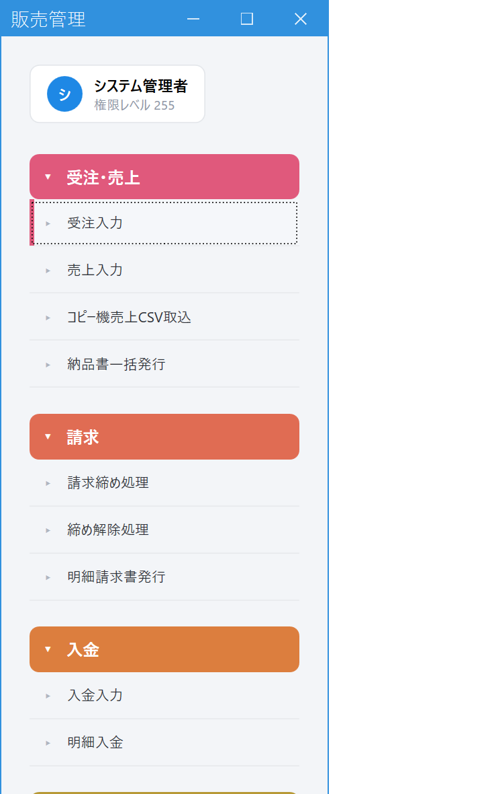
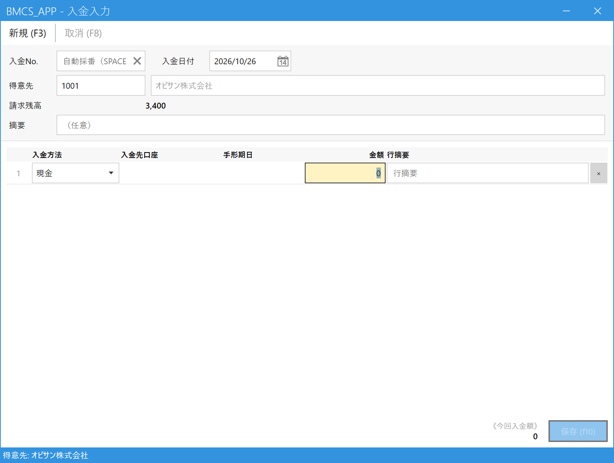
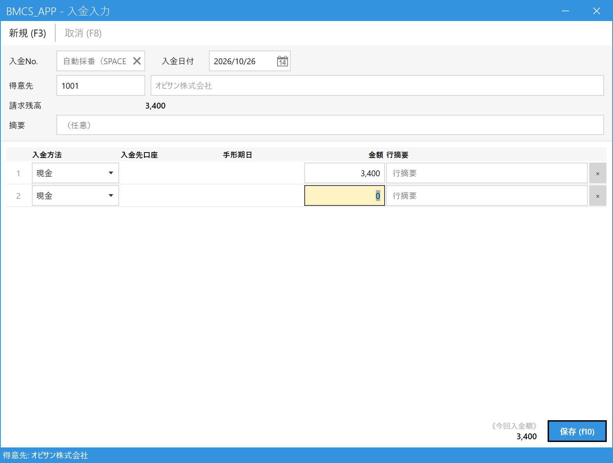
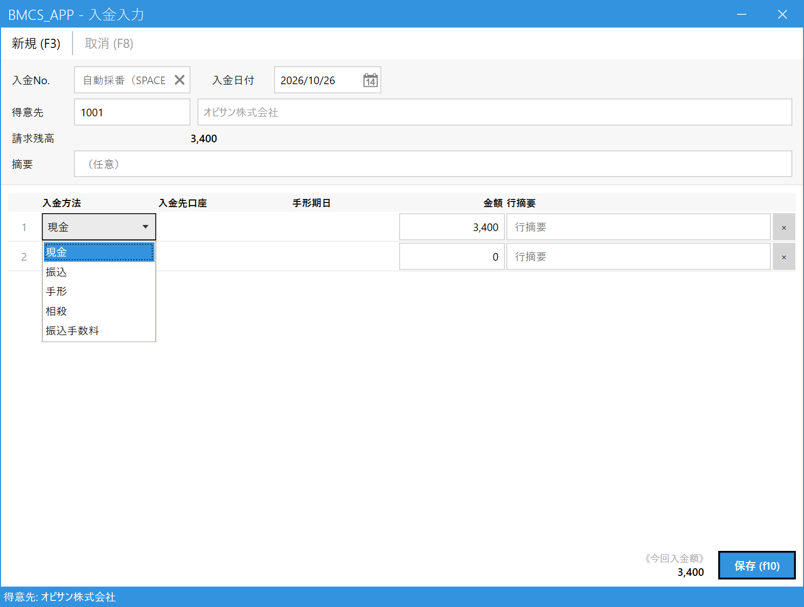
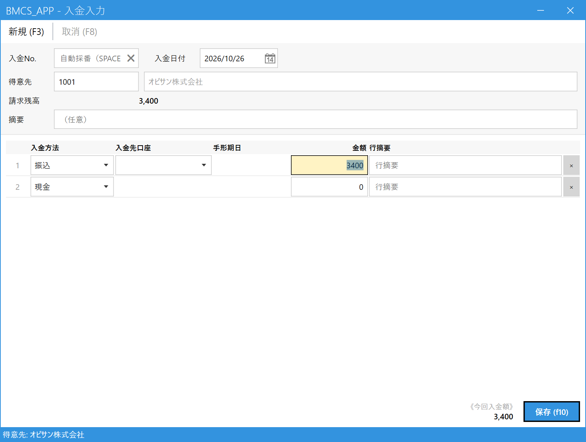

Register a Payment Receipt
Use this when a customer has paid you (cash, bank transfer, bill, and so on).
Once registered, the payment is applied automatically to the oldest billings first and marked as paid, and the customer's outstanding balance goes down. You do not need to choose which billing the payment applies to.
1.Open the Receipt Entry screen
On the main menu, click Receipt Entry (入金入力) under Receipts (入金).

- Click "Receipt Entry (入金入力)"
2.Choose the customer and check the outstanding balance
Enter the code in the Customer (得意先) field and press Enter (if you don't know the code, press Space to search). Once the customer is set, their outstanding balance (請求残高) (the total of billings not yet paid) is displayed.

- Receipt Date (入金日付): The day you actually received the money (today's date is filled in). Correct it if it was a different day.
- Customer (得意先): The customer who paid.
- Outstanding Balance (請求残高): The amount this customer has not paid yet. Use it as a guide for the payment amount.
3.Enter the payment method and amount
On the first detail line, enter how (payment method) and how much (amount) you received.

- Payment Method (入金方法): Choose from cash, bank transfer, bill, offset, and so on.
- Amount (金額): The amount you received.
- Line Remarks (行摘要): A note for that line (optional).
- Total Receipt Amount (今回入金額): The total of all lines. Check that it matches the total you received.
- Save (保存) (F10): Becomes available once you enter an amount (see section 4).
Choose the payment method

- Click the payment method to open the list of choices.
When you choose "Bank Transfer (振込)": the deposit account
When you set the payment method to Bank Transfer (振込), a Deposit Account (入金先口座) field appears. Choose the account the money was deposited into.

- When you change the payment method to "Bank Transfer (振込)"...
- ...a field for choosing the deposit account appears.
When you choose "Bill (手形)", a Bill Due Date (手形期日) field appears in the same way.
When the payment is split across several methods
When a single payment is split across several methods, such as "10,000 yen in cash + 20,000 yen by bank transfer", enter them one per line, from the second line on. Lines are added automatically. The total becomes the "Total Receipt Amount (今回入金額)".
4.Save
Press Save (保存) (F10). When it succeeds, the message "Receipt No. ○○ has been registered. (入金No. ○○ を登録しました。)" appears at the bottom of the screen. The amount you received is subtracted from the outstanding balance.
5.Common tasks
| What you want to do | How |
|---|---|
| View or correct a registered payment | Enter the number in the Receipt No. (入金No.) field and press Enter, or press Space and pick it from the list. Make your corrections and save. |
| Cancel a payment | Call up the payment and press Cancel (取消) (F8) on the toolbar. |
| Re-enter the payment amount from scratch | Press New (新規) (F3) to clear the screen. |
| The customer paid with a transfer fee deducted | "Transfer Fee (振込手数料)" is one of the payment method choices, but how to handle the fee difference has not been decided yet. This will be added once it is decided. |